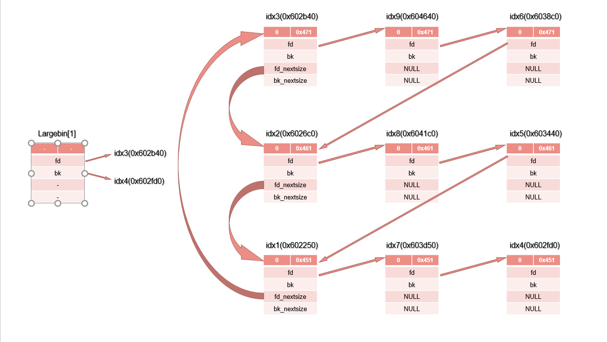
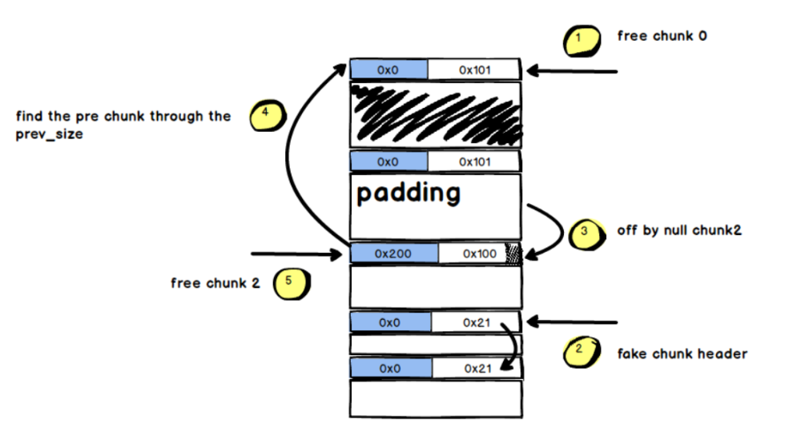

Heap Exploit v2.31
本文作者：t1an5t@StarCross
前言
截至目前，linux的glibc最新版本为2.31，相对于旧版本，安全保护做得更加完善。所以，总结一些相对较新的安全机制，以及对应可操作的glibc heap利用技巧，可以有效针对最新的2.31版本的glibc，当然，基本上也可以通杀掉之前的其他版本带tcache的glibc。
tcache
变动
首先，为了增加安全性，2.29版本以后的tcache_entry结构体发生了变化，增加了key字段。
其结构体变成了
1 | typedef struct tcache_entry |
且在free的时候多了一段检测
1 | if (__glibc_unlikely (e->key == tcache)) |
之后在tcache_put函数中：
1 | static __always_inline void |
整个流程为：调用tcache_put放入tcache_entry的时候，其next指针和之前变化一致，但是其key字段指向了tcache。然后free的时候会检测key字段是否为tcache，相等则检测free的指针值是否在对应的tcache_entry链上，如果在则视为程序在double free，进而终止程序。这里为什么逻辑不是key等于tcache直接中断，应该是考虑了用户放在key字段的数据恰好为tcache值的情况。
这种简单的方法使得之前的tcache非常随意的double free失效了。不过绕过的方式也非常简单，即在构造double free时提前修改key字段的值为任意其他的值即可。所以相关的所有攻击手法依然可用，不过增加了能够修改key字段的前提。
还有一个变动就是tcache本身的结构体发生了变化：
counts字段由原来的一字节变成了现在的两字节。
1 | typedef struct tcache_perthread_struct |
我也不清楚这么变化的目的。不过这使得一些分析堆利用的gdb插件解析出现了一定的错误。
fastbin
fastbin与tcache之间存在一种新的stash的机制：
1 | /* While we're here, if we see other chunks of the same size, |
也就是说当从fastbin里取chunk时，其余的chunk会被依次放入对应的tcache中，终止条件时fastbin链为空或者tcache装满。
其余没什么变动，要注意做fastbin相关利用的时候要先填满对应的tcache_entry链。
smallbin
tcache与smallbin之间也增加了stash的过程，即向smallbin申请的时候，这条smallbin链中其余chunk会被放到对应size的tcache_entry链中。
1 | size_t tc_idx = csize2tidx (nb); |
tcache stash unlink
这种smallbin解链方式类似于远古版本的无检测unlink，由此也产生了新的利用方式，目前适用于所有带tcache的glibc版本。
攻击的前提就是得到堆地址，且可以修改smallbin中chunk的bk字段，这里针对不同情况，可以实现三种效果：
Tcache stash unlink attack，可以实现等价于unsortedbin的作用，即向任意地址写入一个不可控的大数字。其最核心操作，就是先放入2个chunk到smallbin，6个chunk到对应的tcache。之后在不破坏fd的情况下将后放入smallbin的chunk的bk设置为目标地址-0x10。这样当再向smallbin申请对应size的chunk时（一般用calloc，因为calloc不请求tcache），先放入smallbin的chunk被分配给用户，然后触发stash机制。bck = tc_victim->bk; 此时的bck就是目标地址-0x10，之后 bck->fd = bin; 也就是*(目标地址-0x10+0x10) = bin，这样就实现了等价于unsortedbin的操作。之后调用tcache_put把后放入smallbin的chunk取出给对应的tcache，因为tcache之前已经被布置了6个chunk，这次put后达到了阈值，所以也就退出了这次stash循环，整个流程就可以正常结束了。
对应题目：HITCON2019-one_punch_man
WP：https://medium.com/@ktecv2000/hitcon-ctf-2019-quals-one-punch-man-pwn-292pts-3e94eb3fd312
Tcache stash unlink attack+，可以实现任意地址的分配，和上述布局大致相同，不过有细微差异，放入2个chunk到smallbin，5个chunk到对应的tcache，后在不破坏fd的情况下将后放入smallbin的chunk的bk设置为目标地址-0x10。同时要令目标地址+8中的值是一个指向一处可写内存的指针。之后来到stash机制之后，后放入smallbin的chunk被放入tcache，此时的bin->bk就是目标地址-0x10，相当于把目标地址-0x10的指针链接进了smallbin中。之后不满足终止条件，会进行下一次的stash，这时的tc_victim就是目标地址，之后为了令bck = tc_victim->bk; bck->fd = bin; 能够正常运行，所以之前才需要令目标地址+8中的值是一个指向一处可写内存的指针。之后目标地址就会被放入tcache_entry的头部，stash满足终止条件而终止。
对应题目：HITCON2019-lazyhouse
WP：https://github.com/scwuaptx/CTF/blob/master/2019-writeup/hitcon/lazyhouse.py
Tcache stash unlink attack++，可以同时实现上述两种功能，基于上述的第二种方法进行稍微的调整即可，也就是smallbin里的bk设置为目标地址1-0x10，将目标地址1+8的位置设置为目标地址2-0x10。这样就可以令tcache分配到目标地址1，同时向目标地址2写入一个大数字。
对应题目：XCTF-GXZY2020-twochunk
WP：https://sh1ner.github.io/2020/03/10/gxzyctf2020-twochunk/
largebin
因为largebin链里面的chunksize是可以不相同的，所以largebin维护其关系的双向链表有两种形式来进行维护。源代码比较复杂，网上的资料有详细讲解，但是介绍的都并不直观或者不完全正确。
所以这里用C代码和布局展示，以图片的形式来观察largebin的布局方式。
测试代码
1 |
|
布局

规则
这里只画出了fd和fd_nextsize，bk和bk_nextsize反向指回去即可。
largebin[1]的fd只会指向该大链中size最大的小链的第一个元素也就是idx3，largebin[1]的bk指向该大链中size最小的小链的最后一个元素也就是idx4。
第一个放进该小链的chunk会被当做头部（带着fd/bk_nextsize的），只有每个小链的头部有fd/bk_nextsize，且均指向其他头部，fd_nextsize指向比自己size小的头部，bk_nextsize则指向比自己size大的头部。最小size的头部的fd_nextsize指向最大size的头部，最大size的头部bk_nextsize同理指向最小size的头部。
提取规则：
沿着小链头部fd指向进行索引取出，最后才会取小链头部。比如以idx2<->idx8<->idx5这条链为例，第一次取的chunk为idx8，之后变成idx2<->idx5，然后再取的chunk为idx5，最后才会取idx2。取idx2的时候，因为取完之后idx2的小链就空了，idx1的小链头部和idx3的小链头部fd/bk_nextsize部分会被重新构造为彼此链接。
插入规则：
第一个插入该小链的chunk会被当做头部（带着fd/bk_nextsize的），之后的链会类似于一种fastbins的感觉进行插入，比如我的测试代码里插入的顺序是idx2，idx5，idx8，idx2因为是第一个插入作为头部，idx5插入的时候会构成idx2<->idx5，而idx8插入的时候会变成idx2<->idx8<->idx5。
largebin attack
largebin attack可以实现向指定地址写一个大数的效果。需要泄露libc地址以及堆地址，并可以覆盖bk_nextsize字段。
发生在从unsortedbin链中解链并放入对应bin这个操作中，以2.29中的代码为例：
1 | else |
在2.31以前的版本，largebin attack有两种操作方式。其核心思想就是借助二重指针的操作给了攻击者利用机会。两个可利用的操作分别发生在：
https://elixir.bootlin.com/glibc/glibc-2.29/source/malloc/malloc.c#L3860
https://elixir.bootlin.com/glibc/glibc-2.29/source/malloc/malloc.c#L3880
2.31后代码变成了：
1 | else |
即增加了对应的保护机制：
https://elixir.bootlin.com/glibc/glibc-2.31/source/malloc/malloc.c#L3867
https://elixir.bootlin.com/glibc/glibc-2.31/source/malloc/malloc.c#L3873
所以这里提供两种payload，就是构造的size大小顺序问题。第一种适用于所有版本，第二种在加了保护之后已经失效：
payload1:
1 | p1 = malloc(0x4a8); |
payload2:
1 | p1 = malloc(0x478); |
其他
off by null
off by null 其实看似脑洞，不过这种问题在实际中存在还是非常多的，比如一些字符串处理函数，如strcpy这种，结尾长度控制不当，很容易造成多写入一个\x00字节的情况。
传统的off by null思路

这里说前向合并或者后向合并容易产生歧义，所以我就用高低地址来表示。
因为free chunk2的时候会检测P位而发生向低地值的合并：
1 | /* consolidate backward */ |
所以chunk2的指针就会根据其pre_size发生向低地值的扩展。但同时unlink的代码是这样的：
1 |
|
检测P的fd和bk的合法性。
1 | if (__builtin_expect (FD->bk != P || BK->fd != P, 0)) \ |
这也是图中步骤1的作用，先把chunk0放入unsortedbin中，这样靠系统帮助我们完成检测。这一步就绕过去了。
之后还会进行向高地址合并的检测：
1 | if (nextchunk != av->top) { |
为了不触发这段机制，我们只能让代码走到else部分，这就是步骤2的作用，伪造的nextchunk的nextchunk在chunk内的区域，让clear_inuse_bit_at_offset(nextchunk, 0);不影响我们的操作。
达成的效果就是：chunk0和chunk2中间的chunk1（当然也可以有很多chunk），可以被我们复用，实现等效于UAF的效果。
2.29后的off by null
上述的一切在2.29后变得不再成立，因为向低地值合并的代码加了一段检测：
1 | /* consolidate backward */ |
不过这里依然可以利用，核心思想就是利用chunk中的残留指针信息，以及对堆布局的理解与预测来实现。
具体的分析过程过长，不过我之前在看雪投过一篇文章：
https://bbs.pediy.com/thread-257901.htm
对应题目：balsnCTF-2019-plaintext
WP：http://blog.eonew.cn/archives/1233
unsortedbin attack
unsortedbin attack是一种很简单的利用方式，也可以实现向任意地址写入大数。实现方法只需要改写unsortedbin里面chunk的bk即可。
不过目前增加了patch后，这种方法已经失效。
https://elixir.bootlin.com/glibc/glibc-2.29/source/malloc/malloc.c#L3754
1 | if (__glibc_unlikely (bck->fd != victim) |
house of force
house of force是利用溢出修改top chunk的size信息，在通过malloc计算好的size，以实现top chunk任意地址分配的效果。
不过patch后，同样失效。
https://elixir.bootlin.com/glibc/glibc-2.29/source/malloc/malloc.c#L4114
1 | if (__glibc_unlikely (size > av->system_mem)) |
当然，也有一种思路，也是可以利用的，因为av->system_mem是记录在main_arena里面的值，同时其所在段的权限是可写的，所以只要修改掉这个值，就可以继续利用了。不过这么利用，总觉有一种本末倒置的感觉。
house of spirit
这种方法依然可用，即通过伪造数据使系统判断这个地址指向是一个合法的chunk，之后即可free对应的地址。甚至在tcache下可能会更加容易。不过我个人感觉这种技术本身上没什么应用场景。
house of botcake
从how2heap上看到的，一种适用于tcache的技巧。基于double free漏洞，利用unsortedbin和tcache的布局，达成overlap的效果。payload大致如下：
1 | char *x[7]; |